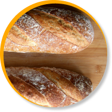
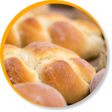

Pan de cereales
El pan de semillas incorpora semillas enteras o fraccionadas de cereales y oleaginosas como, por ejemplo, de girasol, sésamo, lino… La incorporación de las semillas puede ser en la masa o en la superficie, pero siempre en forma de semillas apreciables y nunca molidas.

Pan payés
Redondo, corteza gruesa y crujiente, miga muy alveolada por la fermentación intensa. Ideal para comer con jamón.

Hogaza de León
Hogaza de León es un pan típico de la provincia leonesa, por su proceso de elaboración artesana, con masa madre y fermentación en bloque es un pan que se mantiene fresco más tiempo.

Pan germinado
Elaborado con la semilla del cereal, no lleva levadura y por lo tanto potencia el valor nutricional del pan. Conciderado con el sabor más natural. No contiene glúten.

Pan de leche
El pan de leche es un pan de miga esponjosa muy blandito, y se puede comer tanto con dulce como salado.

Pan de espelta
Esta variedad de trigo es más digerible que el trigo de siempre. Ideal para personas co problemas de tránsito intestinal. Apto también para personas alergicas al trigo.
Pan candeal
Puedes encontrarlo en barra, forma de torta o de rosca. Elaborado con harina blanca de trigo candeal lo que da como resultado una corteza consistente y una miga prieta.
Pan trenzado
Esta pieza alargada compuesta por dos o tres tiras de mas que se unen en una y recuerda por su forma a una trenza de cabello.

Pan de centeno
De apariencia más compacta ya que su cereal tiene menos gluten que el de otros tipos y su sabor es ligeramente amargo.

Pan de molde
Similar al pan blanco de toda la vida pero se añade más grasa para que sea más blando.